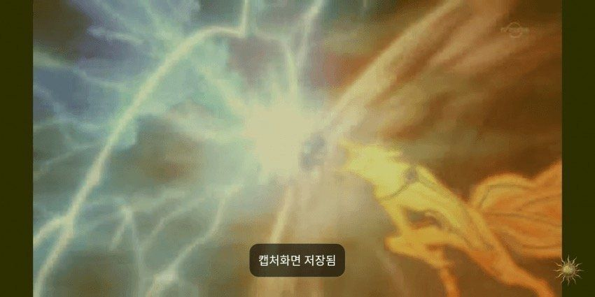
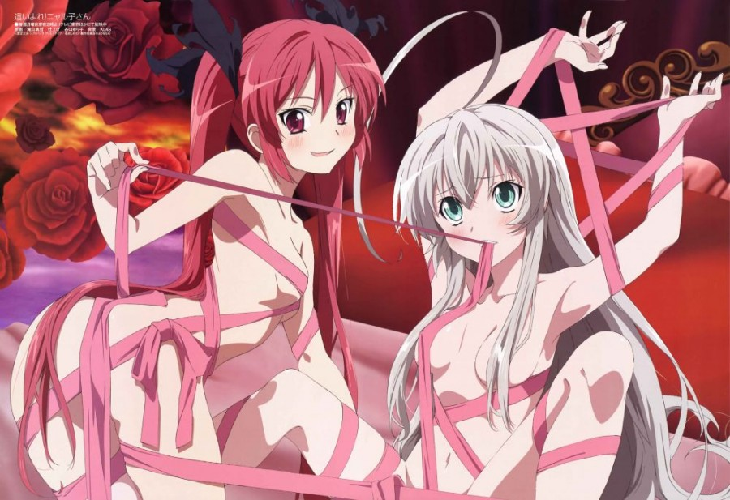

2상sung욕za 페이지
어서요세요 2상sung욕za입니다.
관계자 소개
총괄감독 : 유재훈
제작 : 이민준
쟈료제공 : 박희승, 황수명
미안하다 이거 보여주려고 어그로끌었다.. 나루토 사스케 싸움수준 ㄹㅇ실화냐?
진짜 세계관최강자들의 싸움이다.. 그찐따같던 나루토가 맞나? 진짜 나루토는
전설이다..진짜옛날에 맨날나루토봘는데 왕같은존재인 호카게 되서 세계최강
전설적인 영웅이된나루토보면 진짜내가다 감격스럽고 나루토 노래부터 명장면까지
가슴울리는장면들이 뇌리에 스치면서 가슴이 웅장해진다.. 그리고 극장판 에 카카시
앞에 운석날라오는 거대한 걸 사스케가 갑자기 순식간에 나타나서 부숴버리곤 개간지나게
나루토가 없다면 마을을 지킬 자는 나밖에 없다 라며 바람처럼 사라진장면은 진짜
나루토처음부터 본사람이면 안울수가없더라 진짜 너무 감격스럽고 보루토를 최근에 알았는데
미안하다.. 지금20화보는데 진짜 나루토세대나와서 너무 감격스럽고 모두어엿하게 큰거보니
내가 다 뭔가 알수없는 추억이라해야되나 그런감정이 이상하게 얽혀있다.. 시노는 말이많아
진거같다 좋은선생이고..그리고 보루토왜욕하냐 귀여운데 나루토를보는것같다 성격도 닮았어
그리고버루토에 나루토사스케 둘이싸워도 이기는 신같은존재 나온다는게 사실임?? 그리고
인터닛에 쳐봣는디 이거 ㄹㅇㄹㅇ 진짜팩트냐?? 저적이 보루토에 나오는 신급괴물임?ㅡ
나루토사스케 합체한거봐라 진짜 ㅆㅂ 이거보고 개충격먹어가지고 와 소리 저절로 나오더라
;; 진짜 저건 개오지는데.. 저게 ㄹㅇ이면 진짜 꼭봐야돼 진짜 세계도 파괴시키는거아니야
.. 와 진짜 나루토사스케가 저렇게 되다니 진짜 눈물나려고했다.. 버루토그라서 계속보는
중인데 저거 ㄹㅇ이냐..? 하.. ㅆㅂ 사스케 보고싶다.. 진짜언제 이렇게 신급 최강들이
되었을까 옛날생각나고 나 중딩때생각나고 뭔가 슬프기도하고 좋기도하고 감격도하고
여러가지감정이 복잡하네.. 아무튼 나루토는 진짜 애니중최거명작임..
- 자료제공 박희승 -

- 자료제공 박희승 -
희승이 딸이다.

- 자료제공 박희승 -
이오리가 귀여운 이유
이오리가 귀여운 이유는 디시인사이드같은 곳에서도 논해지고 있는 주제이다.
예시1)
예시2)
필자는 이렇게 생각한다. 그냥 이오리라서 귀여운게 아닐까? 그리고 수명이 아내다.
- 자료제공 황수명 -
대표 유재훈
그는 "전설"이다. (재훈이 사진 모집 받음)
@추가 가능한 기능 : 동영상, 타 사이트를 이곳에서 보는 것도 가능. 댓글, 채팅 등